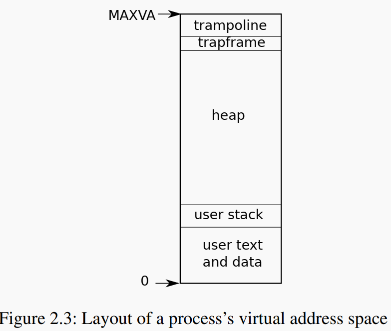

An operating system must fulfill three requirements: multiplexing, isolation, and interaction. This chapter discuss how the OS organizaiotn provides the above three functions
OS abstract resouces into services is one way to provide strong isolation to forbid applications from directly accessing sensitive data.
For example, Unix applications interact with storage only through the file system’s open, read, write, and close system calls, instead of reading and writing the disk directly.
Another example is OS Scheduling service, which transparently switches hardware CPUs among processes, which avoid one process occupy CPU resources for long time
System Calls discussed in Chapter 1 is carefully designed to provide service to applicaitons while keep strong isolations between processes.
To achieve strong isolation, the operating system must arrange that applications cannot modify (or even read) the operating system’s data structures and instructions and that applications cannot access other processes’ memory
RISC-V CPU provides three mode: user mode, supervisor mode and machine mode, to support strong isolation between application and OS kernel.
Machine mode has full privilege and is used to configure a computer when CPU started to load the kernel.
Applciation run under user mode which has limited access to resouces. Application can not invoke kernel function directly but through system calls. When system call is inveoked. CPU will do a set of operations to transform to supervisor mode to verify the arguments the application provided. After system call executed, the CPU will go back to user mode.
The process abstraction prevents one process from wrecking or spying on another process’s memory, CPU, file descriptors, etc. The mechanisms used by the kernel to implement processes include the user/supervisor mode flag, address spaces, and time-slicing of threads.
A process’s most important pieces of kernel state are its page table, its kernel stack, and its run state (defined in proc struct). p->state indicates whether the process is allocated, ready to run, running, waiting for I/O, or exiting. p->pagetable holds the process’s page table, in the format that the RISC-V hardware expects。
Each process uses two stacks: user stack (in user space) and kernel stack (in kernel space). Each process has a thread of execution (or thread for short) that executes the process’s instructions. A process’s thread alternates between actively using its user stack and its kernel stack.
In summary, a process bundles two design ideas:
In xv6, a process consists of one address space and one thread.
Process memory lay out in user address space: 